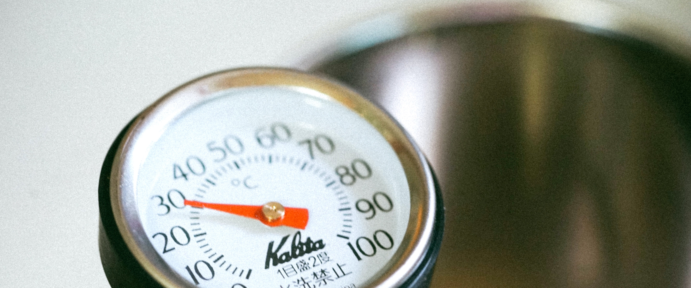

Getting Started With Tea

Tea seems like an easy thing to get into, but because of the existence of the amount of tea-related knowledge, it can be a bit overwhelming. Sometimes you might ask yourself some of these questions. What brand should I get? How to brew it correctly? What is technically tea? All these questions are great! Getting into a new hobby isn't something to fear. When I started to view tea as a hobby, I was consumed with curiosity. I wanted to know and try everything. Of course, this isn't the smartest decision financially but it's a decent start. Just the right attitude is enough to enter the wonderful world of tea!.. Read More
Does Temperature Matter?
Most people when making tea or coffee would think that you need to use boiling water all the time. Well, that's not the case. Some teas require specific temperatures when brewing. It may not matter to most people who might be just trying to their daily caffeine, but to some, the taste of their tea can be a deal-breaker. I know a few people who love coffee to death but won't drink from big brands like Starbucks or Dunkin' simply because they think it tastes burnt. This could signal that the people making the coffee don't worry much about temperature and just try to get you your drink. Tea leaves are very delicate and the slightest change could throw an entire drink off...Read More
Bagged or Loose?

Most people I know probably use tea bags when making tea. I get it, they're cheap, more convenient, and just overall easier to deal with. The resulting tea tastes fine. That's great and all but I think everyone should at least try loose-leaf tea at least once in their life. I'm not talking about the kind of paper you write on in school but of unbagged tea leaves that you have to strain. I know what you might be saying, what's the difference? The answer is quality!... Read More